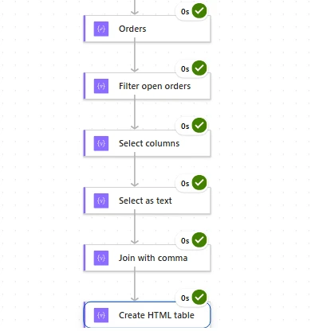
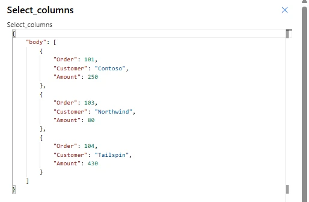
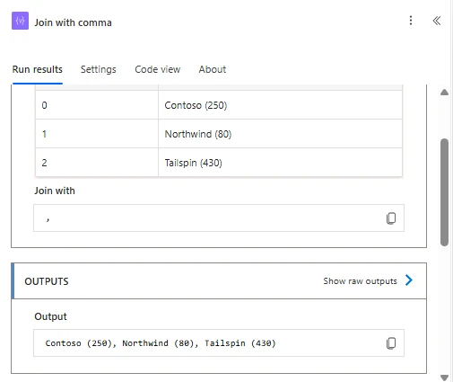

- Power Automate
- Level 2 · Working with data · 1 of 7
Select, Filter array and Join
Beginners loop over a list with Apply to each to do almost anything. Three data operations do most of that work in one step each, and much faster.
The pattern: filter rows, pick columns, make text
WhatFilter array keeps rows, Select keeps or reshapes columns, Join turns a list into one line of text.
WhyOne action instead of a loop with variables: faster, fewer actions, easier to read.
DemoFive orders → only the open ones → just customer and amount → one line for an email.
Filter → Select → Join
Orders: 5 rows (id, customer, amount, status)
Filter array: keep status = Open → 3 rows
Select: keep Order, Customer, Amount → 3 smaller rows
text mode
Select as text → Join with
, table
Create HTML table for an email
"Contoso (250), Northwind (80), Tailspin (430)"

Filter array: keep the rows you want
Every row tested against the rule
| Order | Status | equals(item()?['status'], 'Open') | Kept? |
|---|---|---|---|
| 101 Contoso | Open | true | kept |
| 102 | Closed | false | dropped |
| 103 Northwind | Open | true | kept |
| 104 Tailspin | Open | true | kept |
| 105 | Closed | false | dropped |
@equals(item()?['status'], 'Open')| Piece | What it does |
|---|---|
item() | The row being checked. Filter array tests every row, one at a time. |
?['status'] | That row's status field. |
equals(..., 'Open') | True keeps the row; false drops it. Case-sensitive. |

Build simple rules with the three boxes; switch to Edit in advanced mode for and / or.
Select: keep or rename the columns
One row in, one row out
{"id":101,"customer":"Contoso","amount":250,"status":"Open"}
key/value mode
{"Order":101,"Customer":"Contoso","Amount":250}
text mode
"Contoso (250)"

@concat(item()?['customer'], ' (', string(item()?['amount']), ')')| Piece | What it does |
|---|---|
item()?['customer'] | The customer of the current row. |
string(item()?['amount']) | The amount as text, so it can be joined. |
concat(...) | One line per row: Contoso (250). |
Text mode is the small toggle on the Map box. It turns each row into one value, which is what Join needs.
Join and Create HTML table

| Action | Input | Output | Use it for |
|---|---|---|---|
| Join | A list of text values | One text with a separator | A line in an email or Teams message |
| Create HTML table | A list of objects (Select key/value) | An HTML table; keys become headers | An email body |
| Create CSV table | A list of objects | CSV text | A file attachment |
Watch out
- Filter array and Select read rows with
item(); loops useitems('Loop_name'). - Select keeps the order of the list. Sort first if order matters.
- Filter, Select, Join replaces a loop that appends to a string variable, and runs in a fraction of the time.
New to this? Start from the basics optional
Array: a list in square brackets [ ].
Row and column: when a list holds objects, each object is a row and each field a column.
Build it step by step optional
- Add a Compose Orders with five order objects (id, customer, amount, status).
- Add Filter array Filter open orders: From
outputs('Orders'), rule status is equal to Open. - Add Select Select columns with keys Order, Customer, Amount.
- Add Select Select as text in text mode with the concat formula, then Join with
,. - Add Create HTML table from Select columns. Test.
Common mistakes
- Looping with Apply to each just to filter or reshape.
- Using
items()inside Select or Filter array instead ofitem(). - Joining a list of objects instead of text: switch Select to text mode first.